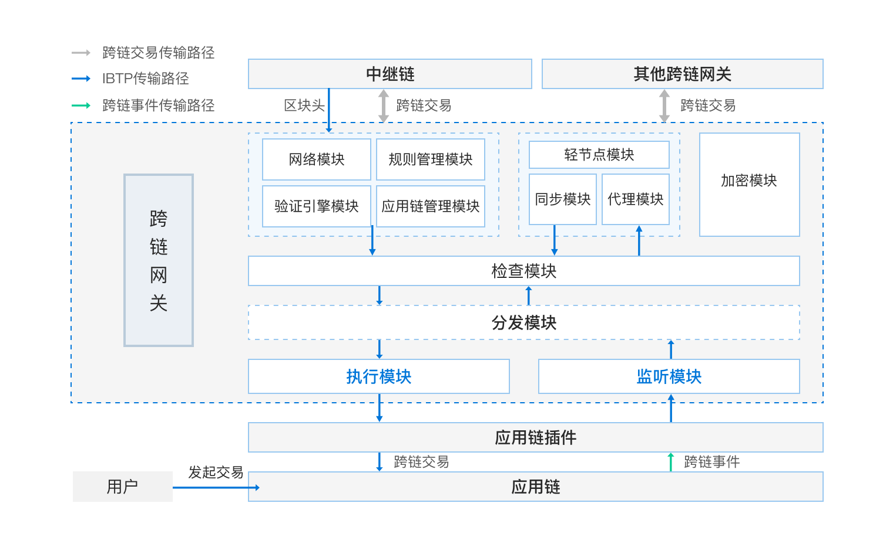

跨链网关设计方案
整体架构
在中继链的设计中，对于跨链网关的主要功能作了简要的介绍。本文主要详细介绍跨链网关的主要设计架构思想。
从跨链网关的功能上来说，设计上需要解决的难点包括以下几点：
-
跨链网关需要对接不同架构的区块链，如何简化跨链网关接入不同区块链的跨链网关设计上需要考虑的问题。
-
跨链网关需要支持中继模式（直接和中继链连接）和直连模式（直接和其他的Pier进行连接），如何在不同模式间切换时设计上需要考虑的问题。
从总体架构来说，跨链网关根据不同的功能采取了模块划分的方式，主要的功能模块有Monitor，Executor，Exchanger，Validate Engine，Appchain Manager，Network等。

处理流程
一次完整的跨链交易的处理过程如下：
A．Monitor监听
跨链网关PA启动之后，Appchain A发起一笔跨链交易，Monitor模块监听到该跨链交易，跨链网关对于该跨链交易做出检查之后，保存相应的跨链交易。
B．Exchanger转发
Exchanger获取Monitor收到的跨链交易，作相应的检查后，进行转发。转发过程中，根据跨链交易的目的链ID以及连接的是中继链还是直连的其他跨链网关等信息，转发到正确的路由路径。
-
中继链模式
通过中继链的SDK，提交跨链交易到中继链的内置合约上，中继链记录并执行验证，转发等操作。
-
直连模式
通过P2P网络连接其他跨链网关，通过跨链交易的目的链ID来转发到相应的跨链网关。
C. Exchanger接受外部跨链交易
-
中继链模式
Exchanger 的子模块Lite和Syncer负责同步中继链的区块头和跨链交易的信息，对于验证通过的跨链交易，Exchanger进行转送到Executor中。
-
直连模式
Exchanger通过P2P网络收到对方跨链网关发送的跨链交易，并作出相应的验证操作。验证通过的跨链交易转送到Executor中。
Executor提交跨链交易到应用链上，并根据执行的结果，构造返回的回执类型的IBTP包，转送到Exchanger进行下一步的转发工作。
D．Exchanger 接收外部回执
来源链发送的跨链交易在目的链执行之后，返回回执信息又回到了来源链的跨链网关之后，进行如下的处理。
-
中继链模式
Exchanger 的子模块Lite和Syncer负责同步中继链的区块头和跨链交易的信息，对于验证通过的跨链交易和回执信息，Exchanger进行转送到Executor中。Executor 模块能够按照IBTP的类型判断对应的处理方式。对于其他链主动的调用的IBTP，需要发回回执，而对于其他链发回的回执就不再构造回执返回。
-
直连模式
Exchanger通过P2P网络收到对方跨链网关发送的跨链交易，并作出相应的验证操作。验证通过的跨链交易或者回执转送到Executor中。 Executor 之后的处理方式和中继链模式下类似。
以上，就是一次完整的跨链交易的执行过程。
模块接口设计
为了简化不同模块之间的协作流程，在上述设计思路的基础上，我们明确了不同模块的服务方式，规定了各个模块之间通信的接口。
Monitor
type Monitor interface {
// Start starts the service of monitor
Start() error
// Stop stops the service of monitor
Stop() error
// listen on interchain ibtp from now on
ListenOnIBTP() chan *pb.IBTP
// query historical ibtp by its id
QueryIBTP(id string) *pb.ibtp
// QueryLatestMeta queries latest index map of ibtps executed on appchain
QueryLatestMeta() map[string]uint64
}
除了能监听从监听开始之后的所有的跨链交易，还可以根据IBTP的ID查询历史数据。
Executor
type Executor interface {
// Start starts the service of executor
Start() error
// Stop stops the service of executor
Stop() error
// HandleIBTP handles interchain ibtps from other appchains
// and return the receipt ibtp for ack or callback
HandleIBTP(ibtp *pb.IBTP) (*pb.IBTP, error)
// QueryLatestMeta queries latest index map of ibtps executed on appchain
QueryLatestMeta() map[string]uint64
}
除了提供启动和结束服务的接口，还提供在在Appchain上执行跨链交易和给出执行的结果信息的接口。
Lite
type Lite interface {
// Start starts service of lite client
Start() error
// Stop stops service of lite client
Stop() error
// QueryHeader gets block header given block height
QueryHeader(height uint64) (*pb.BlockHeader, error)
}
区块链的轻客户端，能够自动同步区块头并提供查询区块头的接口。
Validate Engine
type Checker interface {
// Start starts service of validate engine
Start() error
// Stop stops service of validate engine
Stop() error
// CheckIBTP checks if ibtp is complied with registered validating rule
CheckIBTP(ibtp *pb.IBTP) error
}
提供检查跨链交易是否满足注册的验证规则的接口。验证规则需要提前部署，并绑定在应用链ID上。验证引擎根据跨链交易的目的链ID自动触发绑定的验证规则。
Appchain Manager
type AM interface {
// Start starts service of appchain management
Start() error
// Stop stops service of appchain management
Stop() error
// check if the appchain of destination is registered
Verify(ibtp *pb.IBTP) error
}
负责应用链互相注册、审核和注册应用链审查规则等功能。并在每一个跨链交易真正执行前进行检查。
Exchanger
// 无论是直连还是连接BitXHub都通过Exchanger
type Exchanger interface {
HandleIBTP(ibtp *pb.IBTP) error
SendIBTP(ibtp *pb.IBTP) error
QueryIBTP(id string) (*pb.IBTP, error)
QueryReceipt(id string) (*pb.IBTP, error)
}
重启机制
在我们的设计中，极端情况下，跨链网关可以在没有保存任何跨链相关的数据就能正确启动。当然这需要不断的恢复之前的数据，重启的网络通信代价比较大。为了减少网络传输的启动负担，我们在对于一些关键的跨链信息还是进行了数据库的保存操作。
Exchanger
重启后，Exchanger 会根据启动模式去对方（可以是中继链或者其他网关）查询和自己应用链相关的几个最新序号信息。
-
中继模式
向中继链查询两个序号信息： 中继链上收到的由自己应用链作为来源链主动发出的最新跨链交易序号。 中继链上收到的由自己应用链作为目的链被动回复其他链的最新跨链回执序号。
-
直连模式
向连接的其他网关查询两个序号信息： 其他网关上收到的由自己应用链作为来源链主动发出的最新跨链交易序号。 其他网关上收到的由自己应用链作为目的链被动回复其他链的最新跨链回执序号。
Monitor
重启后，查询Appchain，得到最新抛出的跨链交易的序号。Exchanger会查询相应的对方链的情况，Exchanger再调用Monitor提供的查询最新序号的接口，通过比较能够知道未转发的本链上发起的跨链交易。
Executor
重启后，查询Appchain，得到最新已执行的跨链交易的序号。
Exchanger查询相应的对方链的已收到回执的最新序号，Exchanger再调用Executor提供的查询最新已执行跨链交易序号的接口，通过比较能够知道未转发到本链执行的跨链交易。
总结
总的来说，通过比较两方记录的最新序号信息，网关能够知道需要从何处重新开始工作，并保证交易的序号。通过上面的设计，Pier能够做到无状态启动，并且能解决整体架构中提出的两个问题。